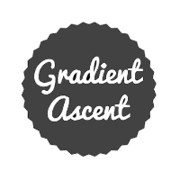

December 4 2016, 600 Words
Image to Image Translation
paper
November 23 2016, 500 Words
Tricking your Super-fancy Neural Net
paper
November 9 2016, 400 Words
Why Sigmoid Neurons?
book
October 14 2016, 400 Words
Deconvolution Layer == Convolution Layer?
paper
October 7 2016, 500 Words
Batch Normalization in Neural Networks
paper
September 28 2016, 500 Words
How Convolutional Neural Networks Work
talk
September 28 2016, 200 Words
Welcome to Gradient Ascent
random
Page 1 of 1
roundedfacebook
roundedgithub
roundedlinkedin
roundedquora
roundedtwitterbird
roundedwww